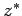
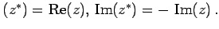
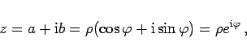
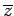

Konjugiert komplexe Zahlen werden zwei komplexe Zahlen z und  genannt, wenn ihre Realteile gleich sind, ihre Imaginärteile sich aber durch das Vorzeichen unterscheiden: Re Geometrisch interpretiert liegen Punkte, die konjugiert komplexen Zahlen entsprechen, symmetrisch zur reellen Achse. Die Moduln konjugiert komplexer Zahlen sind einander gleich, während sich ihre Argumente nur durch das Vorzeichen unterscheiden:
|  | (1.137a) |
An Stelle von z* verwendet man auch die Bezeichnung  für die zu z konjugiert komplexe Zahl.